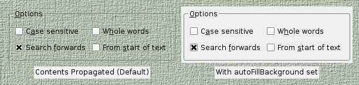

| Home · All Classes · Modules · QSS HELP · QSS 案例 · VER007 HOME |
QWidget的类是所有用户界面对象的基类。More...
通过继承EffectWidget，SeekSlider，VideoPlayer，VideoWidget，VolumeSlider，QAbstractButton，QAbstractSlider，QAbstractSpinBox，QCalendarWidget，QComboBox，QDesignerActionEditorInterface，QDesignerFormWindowInterface，QDesignerObjectInspectorInterface，QDesignerPropertyEditorInterface，QDesignerWidgetBoxInterface，QDesktopWidget，QDialog，QDialogButtonBox，QDockWidget，QFocusFrame，QFrame，QGLWidget，QGroupBox，QHelpSearchQueryWidget，QHelpSearchResultWidget，QLineEdit，QMainWindow，QMdiSubWindow，QMenu，QMenuBar，QPrintPreviewWidget，QProgressBar，QRubberBand，QSizeGrip，QSplashScreen，QSplitterHandle，QStatusBar，QSvgWidget，QTabBar，QTabWidget，QToolBar，QWebInspector，QWebView，QWizardPage，QWorkspace，QX11EmbedContainer和QX11EmbedWidget。
QWidget的类是所有用户界面对象的基类。
窗口小部件是用户界面的原子：它接收从窗口系统的鼠标，键盘和其它事件，并且描绘了自身的表示在屏幕上。每一小窗口是矩形的，并且它们被排序在Z次序。小部件是由其父，并在它前面的小部件裁剪。
未嵌入在父窗口部件一个部件被称为窗口。通常，窗口有一个框架和一个标题栏，尽管它也可以将创建的窗口，没有这样的装饰用合适的window flags） 。在Qt中，QMainWindow和各亚类QDialog是最常见的窗口类型。
每一个部件的构造函数接受一个或两个标准参数：
QWidget中有很多成员函数，但其中一些并没有很多直接的功能，例如， QWidget的有一个字体属性，但从来没有使用这个本身。有很多的子类，提供真正的功能，如QLabel，QPushButton，QListWidget和QTabWidget。
没有父窗口部件widget是始终是一个独立的窗口（顶层窗口小部件） 。对于这些部件，setWindowTitle（）和setWindowIcon（ ）设置标题栏和图标分别。
非窗口小部件子部件，它们的父窗口部件中显示。大多数部件在Qt的主要可用作子部件。例如，它可以显示一个按钮，一个顶层窗口，但大多数人更愿意把自己的按钮，里面的其他部件，如QDialog。

上图显示了一个QGroupBox小工具被用来举办各种子控件中提供的一个布局QGridLayout。该QLabel子部件进行了概述，以表明自己的全尺寸。
如果你想使用一个QWidget来保存子控件你通常会希望将布局添加到父QWidget的。看Layout Management了解更多信息。
当一个部件被用作容器以将一些子部件，它被称为一个复合部件。这些可以通过构造一个小部件所需要的视觉属性来创建 - 一个QFrame例如 - 和添加子控件给它，通常由布局管理。上图显示了使用已创建这样一个复合控件Qt Designer。
复合小部件，也可以通过继承一个标准部件，如QWidget的或创建的QFrame，并在子类的构造函数中添加必要的布局和子部件。许多的examples provided with Qt使用这种方法，而且它也包含在了QtTutorials。
既然是QWidget的一个子类QPaintDevice，子类可以用来显示正在使用的一系列绘图操作与的实例组成的自定义内容QPainter类。这种方法的对比与所用的帆布风格的方法Graphics View Framework其中项目被添加到场景的应用程序和框架本身的呈现方式。
每个插件执行所有绘制操作从在其paintEvent（）函数。这就是所谓每当小部件需要重新绘制，无论是作为应用程序所请求的一些外在的改变，或当所致。
该Analog Clock example显示了一个简单的小工具如何处理绘制事件。
当实现一个新的部件，它几乎总是有用的重新实现sizeHint（ ）提供合理的默认大小的小部件，并设置正确的大小与政策setSizePolicy（ ） 。
默认情况下，复合材料部件不提供尺寸暗示将根据其子控件的空间要求的尺寸。
大小策略可以提供良好的默认行为的布局管理系统，使其他部件可以包含并管理你的轻松。默认大小政策表明尺寸暗示代表widget的首选大小，而这往往是许多小部件不够好。
Note:顶层窗口小部件的大小被限制到桌面的高度和宽度的2/3。您可以resize（ ）小工具手动如果这些边界是不够的。
小部件是通常是由于用户操作事件进行响应。的Qt通过调用特定的事件处理函数的实例把事件的小部件QEvent子类包含有关每个事件的信息。
如果你的widget只包含子控件，你也许并不需要实现任何事件处理程序。如果要检测一个鼠标点击的子控件调用子的underMouse（ ）内的部件的功能mousePressEvent（ ） 。
该Scribble example实现了一组事件来处理鼠标移动，按键操作，窗口大小调整为宽。
你需要提供你自己的小部件的行为和内容，但这里是相关的QWidget的，从最常见的事件的简要介绍：
接受键盘输入的小部件需要重新实现几个事件处理程序：
您可能需要重新实现还有些不常见的事件处理程序：
也有对文档中描述的一些默默无闻的事件QEvent.Type。为了处理这些事件，你需要重新实现event（ ）直接。
的默认实现event（ ）句柄Tab和Shift+Tab（移动键盘焦点） ，并通过对大多数其他活动向更加专业化的处理上面之一。
用于传递他们的活动和机制都包含在The Event System。
除了标准窗口小部件的样式为每个平台，窗口小部件，也可根据在指定的规则样式style sheet。此功能使您可以自定义特定的部件来提供视觉线索来了解他们的目的用户的外观。例如，按钮可以被装饰以一种特定的方式，以表明它执行一个破坏性的动作。
使用插件的样式表中有更详细的描述Qt Style Sheets文档。
由于Qt的4.0 ， QWidget的自动双缓冲的画，所以没有必要在写双缓冲的代码paintEvent（）来避免闪烁。
由于Qt的4.1 ，该Qt.WA_ContentsPropagated部件属性已被否决。相反，父窗口部件的内容默认情况下每个孩子只要传播Qt.WA_PaintOnScreen未设置。自定义部件可以被写入到利用此功能通过更新不规则区域（创建非矩形子部件） ，或绘画与具有低于全alpha分量的颜色。下图显示了如何属性和自定义窗口小部件的属性可以微调，以达到不同的效果。

在上面的图中，一个半透明的矩形子构件与删除的区域构造并添加到父控件（一个QLabel显示一个像素映射） 。然后，不同的特性和部件的属性都设置为实现不同的效果：
快速更新的自定义部件与简单的背景颜色，比如实时绘图或图形元件，它是更好地定义一个合适的背景色（使用setBackgroundRole（）与QPalette.Window作用） ，设置autoFillBackground财产，只有落实在widget的必要的绘图功能paintEvent（ ） 。
快速更新的自定义部件，他们的整个领域不断油漆过不透明的内容，如视频流部件，最好是设置widget的Qt.WA_OpaquePaintEvent，避免与重画窗口部件的背景相关的任何不必要的开销。
如果某个部件有两个Qt.WA_OpaquePaintEvent部件属性and该autoFillBackground属性集，Qt.WA_OpaquePaintEvent属性优先。根据您的要求，您应该选择其中任何一个。
由于Qt的4.1 ，父窗口部件的内容也传播到标准的Qt部件。这可能会导致一些意想不到的结果，如果父窗口部件都装饰以非标准的方式，如下图所示图中。

范围为自定义的标准Qt控件的绘制行为，而不诉诸子类，比可能略有不足为自定义控件。通常，一个标准窗口小部件的所需的外观可以通过设置来实现其autoFillBackground属性。
由于Qt的4.5 ，已经可以用在支持合成窗口系统半透明区域创建窗口。
要启用此功能在顶层窗口部件，设置其Qt.WA_TranslucentBackground带属性setAttribute（） ，并确保其背景是画与非不透明的颜色，你想是部分透明的区域。
平台注意事项：
在Qt的4.4推出，外星人小部件小部件未知的窗口系统。他们没有与之关联的本地窗口句柄。此功能显着加快小部件涂装，调整大小和删除闪烁。
如果您需要使用本机窗口旧的行为，您可以选择下列选项之一：
自的Qt 4.6 ，软键通常是一个装置，其具有一般旁其物理副本位于屏幕上的一个对应的标籤或其它视觉表示上的物理键。它们最常在手机平台上找到。在现代的基于触摸的用户界面，也可以向具有不对应于任何物理键的软键。软键从其他屏幕上的标籤，因为它们的上下文不同。
在Qt中，上下文软键通过调用加入到一个widgetaddAction（ ），并传递QAction用软键角色设置就可以了。当含有软键操作的控件具有焦点时，它的功能键应该会出现在用户界面中。软键被发现通过遍历控件层次结构，以便它可以通过调用定义一组自定义功能键，是目前在任何时候都addAction（ ）对于给定的顶级窗口部件。
在某些平台上，这个概念有重叠QMenuBar这样，如果没有其他软键发现和顶级窗口部件是一个QMainWindow含QMenuBar，菜单栏的操作可能会出现在软键之一。
注：目前软键只支持Symbian平台上。
这个枚举变量描述了如何调用时呈现控件QWidget.render（ ） 。
| Constant | Value | Description |
|---|---|---|
| QWidget.DrawWindowBackground | 0x1 | 如果启用此选项， widget的背景渲染到目标，即使autoFillBackground未设置。默认情况下，启用此选项。 |
| QWidget.DrawChildren | 0x2 | 如果启用此选项， widget的孩子们递归渲染到目标。默认情况下，启用此选项。 |
| QWidget.IgnoreMask | 0x4 | 如果启用此选项， widget的QWidget.mask（ ）被渲染到目标时忽略。默认情况下，该选项被禁用。 |
这个枚举被引入或修改的Qt 4.3 。
该RenderFlags类型是一个typedef为QFlags\u003cRenderFlag\u003e 。它存储RenderFlag值的或组合。
该parent的说法，如果不是没有，原因self通过Qt的，而不是PyQt的拥有。
构造一个控件这是一个孩子parent，与窗口部件标记设置为f。
If parent为0时，新的小部件变成一个窗口。如果parent是另一个小工具，这个小工具变成里面的一个子窗口parent。新的部件将被删除时，其parent被删除。
窗口小部件flags参数，f，通常是0，但它可以被设置来定制窗口的框架（即parent必须为0 ） 。要自定义的框架，选用显示一个从任何的按位OR值组成window flags。
如果您添加一个子部件到一个已经可见小工具你必须明确地表明孩子以使其可见。
请注意， X11版本的Qt可能无法提供风格标志的所有组合在所有系统上。这是因为在X11上， Qt可以只问了窗口管理器，窗口管理器可以复盖应用程序的设置。在Windows上， Qt可以设置任何标志你想要的。
See also windowFlags。
此事件处理程序被调用给定的event每当控件的行为被改变。
See also addAction（ ）insertAction（ ）removeAction（ ）actions（）和QActionEvent。
返回这个窗口部件的动作（可能为空）列表。
See also contextMenuPolicy，insertAction（）和removeAction（ ） 。
设置包含该控件是活动窗口中的顶级窗口部件。
活动窗口是可见的顶层窗口拥有键盘输入焦点。
此函数执行相同的操作，点击一个顶层窗口的标题栏上的鼠标。在X11上，其结果取决于窗口管理器。如果你想确保窗口被堆放在顶部以及你也应该调用raise_（ ） 。注意，这个窗口必须是可见的，否则activateWindow （）没有任何影响。
在Windows中，如果要调用这个应用程序时，当前不是活跃的地区之一那么它不会使其成为活动窗口。它将改变任务栏项的颜色，以指示该窗口已经以某种方式改变。这是因为微软不允许应用程序中断当前用户正在做的另一个应用是什么。
See also isActiveWindow（ ）window（）和show（ ） 。
追加行动action以行动这个小工具的列表。
所有QWidgets具有列表QAction秒，但是它们可以被以图形方式在许多不同的方式来表示。在默认情况下使用的QAction列表（所返回actions（））是创建一个上下文QMenu。
A QWidget应该只有每个动作中的一个，并将其添加已经有一个操作不会导致相同的动作是在插件的两倍。
所有权action不转移到该QWidget。
See also removeAction（ ）insertAction（ ）actions（）和QMenu。
追加行动actions以行动这个小工具的列表。
See also removeAction（ ）QMenu和addAction（ ） 。
调整小部件的大小，以适合其内容。
此函数使用sizeHint（）如果它是有效的，即尺寸暗示的宽度和高度都\u003e = 0 。否则，将大小设置为子女矩形复盖所有子控件（所有子控件矩形的联合） 。
对于Windows，屏幕尺寸也考虑在内。如果sizeHint（）是小于（200， 100）和大小策略是expanding时，窗口将至少（200 ，100）。窗口的最大尺寸就是屏幕的宽度和高度的2/3 。
See also sizeHint（）和childrenRect（ ） 。
返回构件的背景的角色。
背景角色定义的画笔从部件的palette用于呈现的背景。
如果没有明确的背景角色设置，窗口小部件继承了变量其父控件的背景作用。
See also setBackgroundRole（）和foregroundRole（ ） 。
此事件处理程序可以重新实现来处理状态的变化。
在这种情况下被改变的状态可以通过检索event提供。
更改事件包括：QEvent.ToolBarChange，QEvent.ActivationChange，QEvent.EnabledChange，QEvent.FontChange，QEvent.StyleChange，QEvent.PaletteChange，QEvent.WindowTitleChange，QEvent.IconTextChange，QEvent.ModifiedChange，QEvent.MouseTrackingChange，QEvent.ParentChange，QEvent.WindowStateChange，QEvent.LanguageChange，QEvent.LocaleChange，QEvent.LayoutDirectionChange。
返回该位置的可见子控件（x，y） widget的坐标系中。如果没有可见的子窗口部件在指定位置，则函数返回0 。
采用键盘输入焦点从窗口小部件。
如果部件有主动对焦，一focus out event被送到这个小工具来告诉它，它是即将失去焦点。
这个小工具必须以获得键盘输入焦点使对焦设定，也就是说，它必须调用setFocusPolicy（ ） 。
See also hasFocus（ ）setFocus（ ）focusInEvent（ ）focusOutEvent（ ）setFocusPolicy（）和QApplication.focusWidget（ ） 。
删除通过设置任何面膜setMask（ ） 。
See also setMask（ ） 。
这种方法也是一个Qt槽与C + +的签名bool close()。
关闭此窗口小部件。返回True如果部件被关闭，否则返回False 。
首先，它发送一个部件QCloseEvent。该部件是hidden如果acceptsclose事件。如果ignores的情况下，没有任何反应。的默认实现QWidget.closeEvent（）接受close事件。
如果部件有Qt.WA_DeleteOnClose国旗，小部件也将被删除。密切的事件被传递到插件不管小窗口是可见或不可见。
该QApplication.lastWindowClosed（ ）信号被发射时的最后一个可见的主窗口（即没有父窗口）与Qt.WA_QuitOnClose属性设置是关闭的。默认情况下，此属性设置为所有部件，除了短暂的窗口，如闪屏，工具窗口，以及弹出式菜单。
此事件处理程序被调用给定的event当Qt的接收来自窗口系统的顶层窗口部件的窗口关闭请求。
默认情况下，事件被接受和小部件被关闭。您可以重新实现这个函数来改变窗口部件响应窗口关闭请求的方式。例如，你可以通过调用阻止窗口关闭ignore()在所有的事件。
主窗口的应用程序通常使用此功能的重新实现来检查用户的工作是否已经被保存和关闭之前请求许可。例如，本Application Example使用一个辅助函数来决定是否关闭该窗口：
void MainWindow.closeEvent(QCloseEvent *event) { if (maybeSave()) { writeSettings(); event->accept(); } else { event->ignore(); } }
See also event（ ）hide（ ）close（ ）QCloseEvent和Application Example。
该contentsMargins函数返回控件的内容利润率。
此功能被引入Qt的4.6 。
See also getContentsMargins（ ）setContentsMargins（）和contentsRect（ ） 。
返回小部件的边距之内的区域。
See also setContentsMargins（）和getContentsMargins（ ） 。
此事件处理程序，对于事件event，可重新实现在子类中接收部件的上下文菜单事件。
该处理程序被调用时，窗口小部件的contextMenuPolicy is Qt.DefaultContextMenu。
默认实现忽略上下文的事件。请参阅QContextMenuEvent文档了解更多信息。
See also event（ ）QContextMenuEvent和customContextMenuRequested（ ） 。
创建一个新的小部件窗口，如果window为0 ，否则设置widget的窗口window。
初始化窗口（设置几何等） ，如果initializeWindow是真实的。如果initializeWindow是假的，没有执行初始化。此参数才有意义，如果window是一个有效的窗口。
销毁旧的窗口，如果destroyOldWindow是真实的。如果destroyOldWindow是假的，你有责任销毁自己的窗口（使用平台的本机代码） 。
该QWidget构造函数调用创建（ 0 ， TRUE，TRUE ）来创建这个小工具的窗口。
释放窗口系统资源。销毁小部件窗口，如果destroyWindow是真实的。
destroy（）方法调用自身的递归所有子控件，通过destroySubWindows为destroyWindow参数。为了更好地控制破坏subwidgets ，灭subwidgets选择性第一。
这个功能通常是从称为QWidget析构函数。
当拖动正在进行中，鼠标进入这个小工具此事件处理程序被调用。该事件被传递的event参数。
如果事件被忽略，小部件将无法接收任何drag move events。
请参阅Drag-and-drop documentation对于如何提供拖放和拖放在你的应用程序的概述。
See also QDrag和QDragEnterEvent。
当拖动正在进行中，鼠标离开这个小工具此事件处理程序被调用。该事件被传递的event参数。
请参阅Drag-and-drop documentation对于如何提供拖放和拖放在你的应用程序的概述。
See also QDrag和QDragLeaveEvent。
此事件处理程序被调用，如果拖动操作正在进行，并以下任一情况发生时：光标进入这个小工具，将光标移到这个小工具中，或者修改键是在键盘上按下了这个widget具有焦点。该事件被传递的event参数。
请参阅Drag-and-drop documentation对于如何提供拖放和拖放在你的应用程序的概述。
See also QDrag和QDragMoveEvent。
当拖动被丢弃这个widget此事件处理程序被调用。该事件被传递的event参数。
请参阅Drag-and-drop documentation对于如何提供拖放和拖放在你的应用程序的概述。
See also QDrag和QDropEvent。
返回小部件的有效窗口系统标识符，即原生父母的视窗系统标识符。
如果widget是本地的，则该函数返回本地部件编号。否则，第一款原生父控件的窗口ID ，即包含此插件的顶级窗口部件，返回。
Note:我们建议您不要存储这个值，因为它很可能会改变在运行时。
此功能被引入Qt的4.4 。
See also nativeParentWidget（ ） 。
确保插件已被抛光以QStyle（即，具有适当的字体和调色板） 。
QWidget调用这个函数已经完全构造，但它显示的第一时间后前。如果你想确保部件是做一个操作，比如之前抛光就可以调用这个函数，正确的字体大小，可能需要在widget的sizeHint（ ）重新实现。注意，该函数is从默认实现所谓的sizeHint（ ） 。
抛光是所有构造函数（从基类，以及从子类）后，必须发生的被称为最后的初始化非常有用。
如果您需要更改一些设置，当一个部件进行抛光，重新实现event（）和处理QEvent.Polish事件类型。
Note:该函数声明为const ，以便它可以从其他的const函数（例如被调用，sizeHint（））。
See also event（ ） 。
此事件处理程序可以重新实现在子类来接收窗口部件进入其传递的事件event参数。
一个事件被发送到插件当鼠标光标进入窗口小部件。
See also leaveEvent（ ）mouseMoveEvent（）和event（ ） 。
从重新实现QObject.event（ ） 。
这是主要的事件处理程序，它处理事件event。您可以在子类中重新实现这个功能，但是我们建议您使用一个专门的事件处理程序来代替。
按键和释放事件的处理方式不同的其他活动。为Tab和Shift + Tab键事件（）检查，并尝试适当地移动焦点。如果没有小部件将焦点移动到（或者按键不是Tab或Shift + Tab键） ，事件（ ）的调用keyPressEvent（ ） 。
鼠标和平板事件处理也略显特殊：只有当小部件是enabled，事件（ ）将调用专门的处理程序，如mousePressEvent（ ） ，否则将丢弃该事件。
这个函数返回，如果该事件被确认True，否则返回False 。如果识别出事件被接受（见QEvent.accepted） ，任何进一步的处理，如事件传播到父widget停止。
See also closeEvent（ ）focusInEvent（ ）focusOutEvent（ ）enterEvent（ ）keyPressEvent（ ）keyReleaseEvent（ ）leaveEvent（ ）mouseDoubleClickEvent（ ）mouseMoveEvent（ ）mousePressEvent（ ）mouseReleaseEvent（ ）moveEvent（ ）paintEvent（ ）resizeEvent（ ）QObject.event（）和QObject.timerEvent（ ） 。
返回一个指向与窗口标识符/句柄的小工具id。
窗口标识符类型取决于底层窗口系统上，见qwindowdefs.h对于实际的定义。如果没有与此标识符没有小部件，则返回0 。
此事件处理程序可以重新实现在子类中接收键盘焦点事件（收到的焦点）的部件。该事件被传递的event参数
窗口小部件通常必须setFocusPolicy（ ）的东西比其他Qt.NoFocus为了获得焦点事件。 （请注意，应用程序员可以调用setFocus（ ）上的任何部件，即使是那些通常不接受焦点。 ）
默认实现更新微件（除了窗户，不指定focusPolicy（））。
See also focusOutEvent（ ）setFocusPolicy（ ）keyPressEvent（ ）keyReleaseEvent（ ）event（）和QFocusEvent。
发现一个新的widget ，让键盘焦点，以适合Tab，并返回True，如果能找到一个新的部件，还是假的，如果它不能。
See also focusPreviousChild（ ） 。
发现一个新的widget ，让键盘焦点，以适合Tab和Shift + Tab键，如果能找到一个新的widget返回True ，否则返回FALSE ，如果它不能。
If next诚然，这个函数向前搜索，如果next是假的，它向后搜索。
有时候，你会希望重新实现这个函数。例如，一个Web浏览器可能会重新实现它来移动它的“当前活动链接”向前或向后，并调用focusNextPrevChild （）只有当它达到“页”上的最后一个或第一个链接。
子控件调用focusNextPrevChild （ ）对它们的父窗口部件，但只有包含的子控件的窗口决定重定向到哪里焦点。通过重新实现这个函数的对象，因此你获得控制焦点遍历所有子控件。
See also focusNextChild（）和focusPreviousChild（ ） 。
此事件处理程序可以重新实现在子类中接收键盘焦点事件（焦点丢失）的部件。该事件被传递的event参数。
窗口小部件通常必须setFocusPolicy（ ）的东西比其他Qt.NoFocus为了获得焦点事件。 （请注意，应用程序员可以调用setFocus（ ）上的任何部件，即使是那些通常不接受焦点。 ）
默认实现更新微件（除了窗户，不指定focusPolicy（））。
See also focusInEvent（ ）setFocusPolicy（ ）keyPressEvent（ ）keyReleaseEvent（ ）event（）和QFocusEvent。
发现一个新的widget ，让键盘焦点，以适合Shift+Tab，并返回True，如果能找到一个新的部件，还是假的，如果它不能。
See also focusNextChild（ ） 。
返回焦点代理，或者0 ，如果没有焦点代理。
See also setFocusProxy（ ） 。
返回这个窗口部件的setFocus一直呼吁的最后一个孩子。对于顶级窗口部件，这是小部件，将获得焦点的情况下这个窗口被激活
这是不一样的QApplication.focusWidget（ ），它返回的焦点部件在当前活动窗口。
返回控件的当前字体的字体信息。相当于QFontInto （小部件 - \u003efont（））。
See also font（ ）fontMetrics（）和setFont（ ） 。
返回字体度量小部件的当前字体。相当于QFontMetrics（小部件 - \u003efont（））。
See also font（ ）fontInfo（）和setFont（ ） 。
返回前台的角色。
前台角色定义的颜色从部件的palette用于绘制前台。
如果没有明确的前景角色设置，该函数将返回与背景的角色对比的作用。
See also setForegroundRole（）和backgroundRole（ ） 。
返回widget的内容利润率left，top，right和bottom。
See also setContentsMargins（）和contentsRect（ ） 。
Subscribes the widget to a given gesture with specific flags.
此功能被引入Qt的4.6 。
See also ungrabGesture（）和QGestureEvent。
抓起键盘输入。
这个小工具接收所有键盘事件，直到releaseKeyboard（）被调用，其他部件得不到键盘事件的。鼠标事件不会受到影响。使用grabMouse（ ）如果你想抓住这一点。
不同之处在于它不接受任何键盘事件的焦点部件不受影响。setFocus（ ）将焦点移动像往常一样，但新的焦点部件后，才接收键盘事件releaseKeyboard（）被调用。
如果使用不同的部件被抓住当前的键盘输入，该widget的抢是首次发布。
See also releaseKeyboard（ ）grabMouse（ ）releaseMouse（）和focusWidget（ ） 。
抓起鼠标输入。
这个小工具接收所有的鼠标事件，直到releaseMouse（）被调用，其他部件没有得到鼠标事件的。键盘事件都不会受到影响。使用grabKeyboard（ ）如果你想抓住这一点。
Warning:在鼠标抓取应用程序的bug往往锁定终端。使用这个功能非常谨慎，并考虑使用-nograb在调试命令行选项。
这几乎是从来没有必要使用Qt时抢鼠标，因为Qt的争夺并释放它理智。特别是， Qt的劫掠当按下鼠标按钮鼠标，并保持它，直到最后一个按钮被释放。
Note:唯一可见的小工具可以抓取鼠标输入。如果isVisible（ ）返回False的控件，该控件不能调用grabMouse （ ） 。
Note: (Mac OS X developers)为Cocoa上一个widget调用grabMouse （ ）仅当鼠标是widget的框架内。为Carbon，它的工作部件的框架之外为好，像Windows和X11 。
See also releaseMouse（ ）grabKeyboard（）和releaseKeyboard（ ） 。
这个函数的重载grabMouse（ ） 。
抓起鼠标输入并改变光标形状。
光标将呈现形状cursor（只要鼠标焦点被抓住） ，该部件将是唯一一个接收鼠标事件，直到releaseMouse（ ）被称为（ ） 。
Warning:抓住鼠标可能会锁定终端。
Note: (Mac OS X developers)见注中QWidget.grabMouse（ ） 。
See also releaseMouse（ ）grabKeyboard（ ）releaseKeyboard（）和setCursor（ ） 。
增加了一个快捷方式到Qt的快捷键系统，手表对于给定的key序列中的给定context。如果context is Qt.ApplicationShortcut，快捷适用于应用程序作为一个整体。否则，要么是本地的这个小工具，Qt.WidgetShortcut，或者窗口本身，Qt.WindowShortcut。
如果同一key序列已经抓住了几个小工具，当key序列发生QEvent.Shortcut事件被发送到所有的，它适用于非确定性的顺序小部件，而是用``暧昧''标志设置为True 。
Warning:你不应该通常需要使用此功能，而是创建QActions的您需要的快捷键顺序（如果你也想等效的菜单选项和工具栏按钮） ，或创建QShortcut■如果您只需要按键顺序。两QAction和QShortcut处理所有的事件过滤的你，提供当用户触发键序列触发信号，所以更容易比这个低层次的功能使用。
See also releaseShortcut（）和setShortcutEnabled（ ） 。
该graphicsEffect函数返回一个指向Widget的图形效果。
如果部件有没有图形效果，则返回0 。
此功能被引入Qt的4.6 。
See also setGraphicsEffect（ ） 。
返回代理部件在图形视图中相应的嵌入式部件，否则返回0 。
此功能被引入Qt的4.5 。
See also QGraphicsProxyWidget.createProxyForChildWidget（）和QGraphicsScene.addWidget（ ） 。
返回此插件的首选高度，给出的宽度w。
如果这个部件有一个布局，默认实现返回布局的首选高度。如果没有布局，默认实现返回-1 ，表明首选高度不依赖于宽度。
这种方法也是一个Qt槽与C + +的签名void hide()。
隐藏部件。此功能相当于其setVisible （假） 。
Note:如果您正在使用QDialog或者它的子类，并调用了show（ ）函数这个函数后，对话框将显示在原来的位置。
See also hideEvent（ ）isHidden（ ）show（ ）setVisible（ ）isVisible（）和close（ ） 。
此事件处理程序可以重新实现在子类中接收部件隐藏事件。该事件被传递的event参数。
隐藏事件会立即发送到窗口小部件，他们已被隐藏之后。
注：控件接收自发的显示和隐藏事件时，其对应的状态是由窗口系统改变，如当用户最小化窗口，当窗口再次恢复自发show事件自发的隐藏事件。接收自发的隐藏事件之后，一个小部件仍然被认为是在这个意义上可见isVisible（ ） 。
See also visible，event（）和QHideEvent。
该函数返回QInputContext这个小工具。默认情况下，输入上下文是从父窗口部件继承。对于toplevels它是从继承QApplication。
您可以复盖此，并通过使用设置一个特殊的输入上下文返回此插件的setInputContext（）方法。
See also setInputContext（ ） 。
此事件处理程序，对于事件event，可重新实现在子类来接收输入法组成的事件。这个处理程序被调用时，输入法的状态发生改变。
请注意，创建自定义的文本编辑窗口部件时，该Qt.WA_InputMethodEnabled窗口属性必须显式设置（使用setAttribute（ ）函数） ，以便接收输入方法事件。
默认实现调用事件 - \u003e忽略（），它拒绝输入法事件。请参阅QInputMethodEvent文档了解更多信息。
See also event（）和QInputMethodEvent。
此方法仅适用于输入窗口小部件。它是由输入法查询一组小部件要能支持复杂的输入法操作为周围的文字和reconversions支持的特性。
query指定哪些属性进行查询。
See also inputMethodEvent（ ）QInputMethodEvent，QInputContext和inputMethodHints。
插入动作action以行动，在行动之前，这个小工具的列表before。其附加的行动，如果before是0或before是不是这个小工具的有效行动。
A QWidget应该只有每个动作之一。
See also removeAction（ ）addAction（ ）QMenu，contextMenuPolicy和actions（ ） 。
插入动作actions以行动，在行动之前，这个小工具的列表before。其附加的行动，如果before是0或before是不是这个小工具的有效行动。
A QWidget最多可以有各一个动作。
See also removeAction（ ）QMenu，insertAction（）和contextMenuPolicy。
返回给定True，如果这个小工具是父母（或祖父母等，以任何级别） ，child，和两个小部件是相同的窗口内，否则返回False 。
返回True如果这个widget会变成如果启用ancestor被启用，否则返回False 。
这种情况下，如果既不是小部件本身也不是每一个家长最多，但不包括ancestor已被明确禁用。
isEnabledTo （0 ）等效于isEnabled（ ） 。
See also setEnabled（）和enabled。
返回True如果控件被隐藏，否则返回False 。
一个隐藏的小工具只会成为可见的，当show（）被调用就可以了。它不会在父显示时会自动显示。
要检查的知名度，使用！isVisible（）代替（注意感叹号） 。
isHidden （ ）暗示！isVisible（ ） ，但一个部件可以是不可见的，而不是藏在同一时间。这是一个小部件是小部件的不可见孩子的情况。
Widget是隐藏的，如果：
返回True如果这个widget会变成可见的，如果ancestor示，否则返回False 。
真实的情况发生时，如果既不是小部件本身也没有任何父母到不包括ancestor已经明确地隐藏。
此功能仍然会返回True，如果部件是由屏幕上的其他窗口遮挡，但可能是身体上可见，如果它或它们移动。
isVisibleTo （0）是相同的isVisible（ ） 。
See also show（ ）hide（）和isVisible（ ） 。
返回True如果该控件是一个独立的窗口，否则返回False 。
窗口是一个小部件，目前还没有任何其他部件在视觉上的孩子，通常有一个框架和一window title。
一个窗口可以有一个parent widget。然后，它会被分组与其父当父对象被删除删除，当父最小化等，如果由窗口管理器支持，它也将有一个共同的任务栏条目，其父最小化。
QDialog和QMainWindowWidget是默认的窗口，即使在构造函数中指定一个父部件。由指定的这个行为Qt.Window标志。
See also window（ ）isModal（）和parentWidget（ ） 。
返回当前抓住了键盘输入的窗口小部件。
如果在这个应用程序中没有部件被抓住当前的键盘，则返回0 。
See also grabMouse（）和mouseGrabber（ ） 。
此事件处理程序，对于事件event，可重新实现在子类来接收按键事件的小部件。
一个widget必须调用setFocusPolicy（ ）最初接受焦点，并且有重点，以接收按键事件。
如果你重新实现这个处理程序，您调用基类的实现，如果你不经的关键作用是非常重要的。
默认实现关闭弹出窗口部件，如果用户按下Esc键。否则，事件被忽略，从而使部件的家长可以解释它。
需要注意的是QKeyEvent开始isAccepted （ ） == True，所以你不需要调用QKeyEvent.accept（ ） - 只是不调用基类的实现，如果你在关键行动。
See also keyReleaseEvent（ ）setFocusPolicy（ ）focusInEvent（ ）focusOutEvent（ ）event（ ）QKeyEvent和Tetrix Example。
此事件处理程序，对于事件event，可重新实现在子类中接收键释放事件的小部件。
一个widget必须的accept focus最初和have focus为了获得一个键释放事件。
如果你重新实现这个处理程序，您调用基类的实现，如果你不经的关键作用是非常重要的。
默认实现忽略该事件，从而使部件的家长可以解释它。
需要注意的是QKeyEvent开始isAccepted （ ） == True，所以你不需要调用QKeyEvent.accept（ ） - 只是不调用基类的实现，如果你在关键行动。
See also keyPressEvent（ ）QKeyEvent.ignore（ ）setFocusPolicy（ ）focusInEvent（ ）focusOutEvent（ ）event（）和QKeyEvent。
返回安装这个小工具，或者0 ，如果没有安装布局管理器的布局管理器。
布局管理器设置的部件的儿童已被添加到布局的几何形状。
See also setLayout（ ）sizePolicy（）和Layout Management。
此事件处理程序可以重新实现在子类中以接收传递在widget假期活动event参数。
休假事件发送到窗口小部件当鼠标光标离开窗口小部件。
See also enterEvent（ ）mouseMoveEvent（）和event（ ） 。
这种方法也是一个Qt槽与C + +的签名void lower()。
降低小部件的父控件的堆栈的底部。
在此之后调用部件将在视觉上落后（因此被掩盖）任何重叠的兄弟窗口小部件。
See also raise_（）和stackUnder（ ） 。
翻译小工具坐标pos从坐标系parent这个小部件的坐标系。该parent不能为0 ，且必须调用控件的父。
See also mapTo（ ）mapFromParent（ ）mapFromGlobal（）和underMouse（ ） 。
将全局屏幕坐标pos到窗口小部件坐标。
See also mapToGlobal（ ）mapFrom（）和mapFromParent（ ） 。
转换的父控件的坐标pos到窗口小部件坐标。
同mapFromGlobal（ ）如果该控件没有父。
See also mapToParent（ ）mapFrom（ ）mapFromGlobal（）和underMouse（ ） 。
翻译小工具坐标pos到的坐标系parent。该parent不能为0 ，且必须调用控件的父。
See also mapFrom（ ）mapToParent（ ）mapToGlobal（）和underMouse（ ） 。
翻译小工具坐标pos全球屏幕坐标。例如，mapToGlobal(QPoint(0,0))将给小窗口的左上角的像素的全局坐标。
See also mapFromGlobal（ ）mapTo（）和mapToParent（ ） 。
翻译小工具坐标pos在父窗口部件的坐标。
同mapToGlobal（ ）如果该控件没有父。
See also mapFromParent（ ）mapTo（ ）mapToGlobal（）和underMouse（ ） 。
返回上一个窗口部件当前设置的掩码。如果没有掩码被设置的返回值将是一个空白区域。
See also setMask（ ）clearMask（ ）QRegion.isEmpty（）和Shaped Clock Example。
从重新实现QPaintDevice.metric（ ） 。
内部实现虚拟的QPaintDevice.metric（）函数。
m是获得指标。
此事件处理程序，对于事件event，可重新实现在子类中接收鼠标双击事件的小部件。
默认实现会产生一个正常的鼠标按下事件。
Note:窗口小部件也将获得鼠标按下和鼠标释放事件，除了双击事件。它是由开发人员，以确保应用程序正确地解释这些事件。
See also mousePressEvent（ ）mouseReleaseEvent（ ）mouseMoveEvent（ ）event（）和QMouseEvent。
返回当前抓取鼠标输入的窗口小部件。
如果在这个应用程序中没有部件被抓住当前鼠标，则返回0 。
See also grabMouse（）和keyboardGrabber（ ） 。
此事件处理程序，对于事件event，可重新实现在子类中接收鼠标移动事件的小部件。
如果鼠标跟踪被关闭，如果按下鼠标按钮，当鼠标被移动，鼠标移动事件才会发生。如果鼠标跟踪处于开机状态，即使没有按下鼠标按钮会出现鼠标移动事件。
QMouseEvent.pos（）报告鼠标光标的位置，相对于这个小工具。对于按下和释放事件，该位置通常是一样的，最后鼠标移动事件的立场，但也可能是不同的，如果用户的手抖动。这是底层窗口系统，而不是Qt的一个特点。
如果你想立即显示一个工具提示，当鼠标移动（例如，获取鼠标坐标与QMouseEvent.pos（ ） ，并显示它们作为一个工具提示） ，您必须首先启用鼠标跟踪如上所述。然后，以保证工具提示会立即更新，您必须调用QToolTip.showText（）而不是setToolTip（ ）在实现的mouseMoveEvent的（ ） 。
See also setMouseTracking（ ）mousePressEvent（ ）mouseReleaseEvent（ ）mouseDoubleClickEvent（ ）event（ ）QMouseEvent和Scribble Example。
此事件处理程序，对于事件event，可重新实现在子类中接收鼠标按下事件的小部件。
如果您在mousePressEvent创建新的部件（ ）的mouseReleaseEvent（ ）可能不会结束，你期望的，这取决于底层窗口系统（或X11窗口管理器）上，小部件的位置和可能更多。
默认实现实现弹出小窗口的关闭，当您单击窗外。对于其他构件类型它什么都不做。
See also mouseReleaseEvent（ ）mouseDoubleClickEvent（ ）mouseMoveEvent（ ）event（ ）QMouseEvent和Scribble Example。
此事件处理程序，对于事件event，可重新实现在子类中接收鼠标释放事件的小部件。
See also mousePressEvent（ ）mouseDoubleClickEvent（ ）mouseMoveEvent（ ）event（ ）QMouseEvent和Scribble Example。
此事件处理程序可以重新实现在子类中以接收传递在widget移动事件event参数。当控件接收这个事件，这已经是在新的位置。
旧的立场是通过访问QMoveEvent.oldPos（ ） 。
See also resizeEvent（ ）event（ ）move（）和QMoveEvent。
返回原生母体此插件，即下一个祖先插件，其具有系统标识符，或者0 ，如果它不具有任何原生母体。
此功能被引入Qt的4.4 。
See also effectiveWinId（ ） 。
返回这个窗口部件的焦点链中的下一个控件。
See also previousInFocusChain（ ） 。
设置窗口标志的小部件flags，without告诉窗口系统。
Warning:不要调用这个函数，除非你真的知道自己在做什么。
See also setWindowFlags（ ） 。
从重新实现QPaintDevice.paintEngine（ ） 。
返回widget的绘图引擎。
注意，这个函数不应该显式调用的用户，因为它意味着只有重新实现的目的。该函数调用Qt的内部，并默认实现可能并不总是返回一个有效的指针。
此事件处理程序可以在子类来接收传入paint事件重新实现event。
Paint事件是一个请求重绘所有的窗口小部件的全部或部分。它可以发生于下列原因之一：
许多部件可以简单地重新绘制自己的整个表面当记者问到，但有些慢的部件需要通过绘画只有被请求的区域进行优化：QPaintEvent.region（ ） 。这个速度优化不会改变结果，如绘画是在事件处理期间剪切到该区域。QListView和QTableView为此，例如。
Qt还试图通过合并多个paint事件到一个加快绘画。何时update（）被调用几次或者窗口系统发送几个油漆事件， Qt的合并这些事件转换为一个事件有一个较大的区域（见QRegion.united（））。该repaint（ ）函数不允许这样的优化，所以我们建议您使用update（ ）只要有可能。
当绘画事件发生时，更新区域被正常删除，所以要绘制的控件的背景。
背景可以使用设置setBackgroundRole（）和setPalette（ ） 。
由于Qt的4.0 ，QWidget自动双缓冲的画，所以没有必要写双缓冲的代码中的paintEvent （）来避免闪烁。
Note for the X11 platform：可以通过调用切换全局双缓冲qt_x11_set_global_double_buffer()。例如，
... extern void qt_x11_set_global_double_buffer(bool); qt_x11_set_global_double_buffer(false); ...
Note:一般来说，你应该避免调用update（）或repaint（ ）inside一的paintEvent （ ） 。例如，调用update（）或repaint（ ）上的paintEvent里面的孩子（ ）产生不确定的行为，孩子可能会或可能不会得到一个绘画事件。
Warning:如果您正在使用一个自定义的绘图引擎没有Qt的备份存储，Qt.WA_PaintOnScreen必须设置。否则，QWidget.paintEngine（ ）将永远不会被调用;的备份存储将被使用。
See also event（ ）repaint（ ）update（ ）QPainter，QPixmap，QPaintEvent和Analog Clock Example。
返回这个窗口部件的父，或者0，如果它不具有任何父控件。
该previousInFocusChain函数返回前一个窗口小部件在这个widget的焦点链。
此功能被引入Qt的4.6 。
See also nextInFocusChain（ ） 。
这种方法也是一个Qt槽与C + +的签名void raise()。
引发此控件的父控件的堆栈的顶部。
在此之后调用部件将在视觉上的任何重叠的兄弟姐妹部件前面。
Note:当使用activateWindow（ ） ，你可以调用这个函数来确保窗口堆放在上面。
See also lower（）和stackUnder（ ） 。
释放键盘捕获。
See also grabKeyboard（ ）grabMouse（）和releaseMouse（ ） 。
释放鼠标抢。
See also grabMouse（ ）grabKeyboard（）和releaseKeyboard（ ） 。
删除快捷方式与给定id从Qt的快捷键系统。该部件将不再接收QEvent.Shortcut事件的快捷方式的按键顺序（除非它使用相同的密钥序列的其他快捷方式） 。
Warning:你不应该通常需要使用此功能，因为Qt的快捷键系统自动删除快捷方式时，他们的父窗口部件被销毁。最好是使用QAction or QShortcut处理快捷方式，因为它们更容易比这低级别的功能来使用。还请注意，这是一个昂贵的操作。
See also grabShortcut（）和setShortcutEnabled（ ） 。
删除动作action从操作这个小工具的列表。
See also insertAction（ ）actions（）和insertAction（ ） 。
呈现sourceRegion这个小工具到的target using renderFlags来确定如何呈现。在开始绘制targetOffset在target。例如：
QPixmap pixmap(widget->size()); widget->render(&pixmap);
If sourceRegion是一个空区，这个功能将使用QWidget.rect（）作为该区域，即整个部件。
确保你调用QPainter.end（ ）为target器件的有源画家（如果有的话）之前渲染。例如：
QPainter painter(this); ... painter.end(); myWidget->render(this);
Note:要获得一个OpenGL窗口小部件，使用内容QGLWidget.grabFrameBuffer（）或QGLWidget.renderPixmap（ ）来代替。
此功能被引入Qt的4.3 。
这是一个重载函数。
呈现小部件进入painter的QPainter.device（ ） 。
变换和施加到设置painter渲染时将被使用。
Note:该painter必须是活动的。在Mac OS X的部件将被渲染成QPixmap然后由拉伸painter。
See also QPainter.device（ ） 。
这种方法也是一个Qt槽与C + +的签名void repaint()。
直接通过调用重画窗口小部件paintEvent（）立即，除非更新被禁用或部件是隐藏的。
我们建议只使用重绘（ ） ，如果你的动画时需要立即重绘，例如。在几乎所有情况下，update（ ）是更好的，因为它允许的Qt来优化速度和减少闪烁。
Warning:如果您在其中本身可以从调用的函数调用repaint （ ）paintEvent（ ） ，你可能会得到无限递归。该update（ ）函数永远不会导致递归。
See also update（ ）paintEvent（）和setUpdatesEnabled（ ） 。
此事件处理程序可以重新实现在子类中接收部件调整它们传递的事件event参数。当resizeEvent （）被调用时，插件已经拥有新的几何结构。旧的大小是通过访问QResizeEvent.oldSize（ ） 。
该部件将被删除，并处理resize事件后立即收到一个绘画事件。没有图纸需要的话（或者应该是）这个处理程序中完成的。
See also moveEvent（ ）event（ ）resize（ ）QResizeEvent，paintEvent（）和Scribble Example。
恢复存储在字节数组中的几何和国家顶级部件geometry。成功时返回TRUE ，否则返回False 。
如果还原的几何形状是关闭屏幕，它将被修改为可用的屏幕几何里面。
要使用恢复保存几何QSettings，你可以使用如下代码：
QSettings settings("MyCompany", "MyApp"); myWidget->restoreGeometry(settings.value("myWidget/geometry").toByteArray());
请参阅Window Geometry文档与窗口几何问题的概述。
使用QMainWindow.restoreState（ ）来恢复几何和工具栏和停靠小部件的状态。
这个函数中引入了Qt 4.2中。
See also saveGeometry（ ）QSettings，QMainWindow.saveState（）和QMainWindow.restoreState（ ） 。
保存当前的几何形状和国家顶级部件。
要保存窗口关闭时的几何形状，可以实现这样一个close事件：
void MyWidget.closeEvent(QCloseEvent *event) { QSettings settings("MyCompany", "MyApp"); settings.setValue("geometry", saveGeometry()); QWidget.closeEvent(event); }
请参阅Window Geometry文档与窗口几何问题的概述。
使用QMainWindow.saveState（ ）保存的几何形状和工具栏和停靠小部件的状态。
这个函数中引入了Qt 4.2中。
See also restoreGeometry（ ）QMainWindow.saveState（）和QMainWindow.restoreState（ ） 。
滚动窗口小部件，包括其子dx像素向右和dy向下。两dx和dy可能是负的。
滚动后，小部件会收到paint事件为需要重新绘制的区域。如果希望组件的Qt知道是不透明的，这仅仅是新暴露的部位。例如，如果一个不透明的插件被滚动8个像素的左侧，只有一个8个像素的右边缘的需要更新的宽条纹。
由于小部件默认情况下传播他们的父母的内容，您需要设置autoFillBackground财产，或使用setAttribute（ ）来设置Qt.WA_OpaquePaintEvent属性，以使一个部件不透明。
对于使用内容传播窗口小部件，涡旋将导致整个滚动区域的更新。
See also Transparency and Double Buffering。
这是一个重载函数。
只有这个版本春联r并且不移动widget的孩子。
If r为空或无效，其结果是不确定的。
See also QScrollArea.
设置属性attribute这个小工具，如果on为True，否则清除该属性。
See also testAttribute（ ） 。
设置构件的背景的角色role。
背景角色定义的画笔从部件的palette用于呈现的背景。
If role is QPalette.NoRole，那么小部件继承了其父的背景作用。
需要注意的是款式可以自由从调色板中选择任何颜色。您可以修改调色板或设置一个样式表，如果你没有达到你想要的结果与setBackgroundRole （ ） 。
See also backgroundRole（）和foregroundRole（ ） 。
周围设置widget的内容的利润有大小left，top，right和bottom。边缘所使用的布局系统，并且可以由子类来指定的区域绘制（如不包括帧） 。
更改页边距将触发resizeEvent（ ） 。
See also contentsMargins（ ）contentsRect（）和getContentsMargins（ ） 。
这是一个重载函数。
该setContentsMargins函数周围设置控件的内容的利润。
设置围绕插件的内容边距以具有所确定的大小的margins。边缘所使用的布局系统，并且可以由子类来指定的区域绘制（如不包括帧） 。
更改页边距将触发resizeEvent（ ） 。
此功能被引入Qt的4.6 。
See also contentsRect（）和getContentsMargins（ ） 。
这种方法也是一个Qt槽与C + +的签名void setDisabled(bool)。
禁用控件输入事件，如果disable为True，否则使输入事件。
请参阅enabled文档了解更多信息。
See also isEnabledTo（ ）QKeyEvent，QMouseEvent和changeEvent（ ） 。
这种方法也是一个Qt槽与C + +的签名void setEnabled(bool)。
设定最小和小部件的最大高度，以h在不改变宽度。提供了方便。
See also sizeHint（ ）minimumSize（ ）maximumSize（）和setFixedSize（ ） 。
设定最小和小部件的最大尺寸，以s，从而防止其不断增长或收缩。
这将复盖通过设置默认的尺寸限制QLayout。
消除障碍，将大小设置为QWIDGETSIZE_MAX。
或者，如果您想要的小工具有一个固定的大小根据其内容，您可以拨打QLayout.setSizeConstraint （QLayout.SetFixedSize） ;
See also maximumSize和minimumSize。
这是一个重载函数。
设置插件的宽度，以w和高度，以h。
设定最小和小部件的最大宽度，以w在不改变高度。提供了方便。
See also sizeHint（ ）minimumSize（ ）maximumSize（）和setFixedSize（ ） 。
这种方法也是一个Qt槽与C + +的签名void setFocus()。
使键盘输入焦点将这个小工具（或它的焦点代理） ，如果这个widget或其父母之一是active window。该reason参数将被传递到这个函数发送的任何焦点事件，它是用来给的是什么引起的小工具来获得焦点的解释。如果窗口不活跃，该部件将被给予重点当窗口被激活。
首先，集中了事件发送到焦点窗口小部件（如果有的话）来告诉它，它是即将失去焦点。然后在事件的焦点被送到这个小工具来告诉它，它刚刚收到的焦点。 （如果在和焦点集中出部件都是一样的，没有任何反应。 ）
Note:在嵌入式平台上，的setFocus （ ）不会导致由输入法打开输入面板。如果你想做到这一点，你必须发送一个QEvent.RequestSoftwareInputPanel事件的小部件自己。
的setFocus （ ）将焦点移到一个小部件，无论它的重点政策，但不会清除任何键盘捕获（见grabKeyboard（））。
请注意，如果该控件是隐藏的，它不会接受焦点，直到它被显示。
Warning:如果您在其中本身可以从调用的函数调用的setFocus （ ）focusOutEvent（）或focusInEvent（ ） ，你可能会得到一个无限递归。
See also hasFocus（ ）clearFocus（ ）focusInEvent（ ）focusOutEvent（ ）setFocusPolicy（ ）focusWidget（ ）QApplication.focusWidget（ ）grabKeyboard（ ）grabMouse（ ）Keyboard Focus和QEvent.RequestSoftwareInputPanel。
这是一个重载函数。
使键盘输入焦点将这个小工具（或它的焦点代理） ，如果这个widget或其父母之一是active window。
设置控件的焦点代理窗口小部件w。如果w为0时，函数重置这个小工具有没有焦点代理。
有些部件可以“有重点”，而是创建一个子窗口小部件，如QLineEdit，实际处理的重点。在这种情况下，小部件可以设置行编辑是它的焦点代理。
setFocusProxy （）设置，将实际获得焦点时， “这个小工具”得到它的部件。如果有一个重点代理，setFocus（）和hasFocus（ ）上的焦点代理操作。
See also focusProxy（ ） 。
设置构件的背景的角色role。
前台角色定义的颜色从部件的palette用于绘制前台。
If role is QPalette.NoRole，小窗口使用，与背景反差作用前景的作用。
需要注意的是款式可以自由从调色板中选择任何颜色。您可以修改调色板或设置一个样式表，如果你没有达到你想要的结果与setForegroundRole （ ） 。
See also foregroundRole（）和backgroundRole（ ） 。
该effect说法有它的所有权转移给Qt的。
该setGraphicsEffect功能是设置控件的图形效果。
Sets effect作为widget的效果。如果已经安装了这个小工具的效果，QWidget将安装新的前删除现有的影响effect。
If effect是安装在不同的小部件， setGraphicsEffect （ ）会从部件中删除的影响，这个widget安装它。
QWidget采取所有权effect。
Note:此功能适用于本身及其所有儿童的影响。
Note:不支持在Mac的图形效果，所以他们不会造成任何差异widget的渲染。
此功能被引入Qt的4.6 。
See also graphicsEffect（ ） 。
这种方法也是一个Qt槽与C + +的签名void setHidden(bool)。
便利的功能，相当于其setVisible （ ！hidden） 。
See also isHidden（ ） 。
该QInputContext说法有它的所有权转移给Qt的。
该函数设置输入上下文context这个小工具。
Qt可以给定输入的所有权context。
See also inputContext（ ） 。
该QLayout说法有它的所有权转移给Qt的。
设置此插件的布局管理器layout。
如果已经安装了这个小工具布局管理器，QWidget不会让你安装另一个。您必须先删除现有的布局管理器（由返回layout（ ） ） ，然后才能调用的setLayout （ ）使用新的布局。
If layout是在不同的小窗口的布局管理器，的setLayout （ ）将reparent的布局，并使其为这个插件的布局管理器。
例如：
QVBoxLayout *layout = new QVBoxLayout;
layout->addWidget(formWidget);
setLayout(layout);
另一种方法来调用这个函数就是这个小部件传递到布局的构造函数。
该QWidget将采取的所有权layout。
See also layout（）和Layout Management。
导致部件的唯一的像素的量bitmap都有一个对应的1位是可见的。如果该区域包括外部的像素rect（ ） widget的，在这方面的窗口系统的控制可能会或可能不可见，具体取决于平台。
注意，该效果可以是缓慢的，如果该区域是特别复杂的。
下面的代码显示了如何使用alpha通道的图像可以被用来生成一个widget口罩：
QLabel topLevelLabel;
QPixmap pixmap(":/images/tux.png");
topLevelLabel.setPixmap(pixmap);
topLevelLabel.setMask(pixmap.mask());
通过该代码所示的标籤用它包含，给其一个不规则形状的图像被直接绘制到屏幕上的外观的图像屏蔽。
幪面部件只接收他们的可见部分的鼠标事件。
See also mask（ ）clearMask（ ）windowOpacity（）和Shaped Clock Example。
这是一个重载函数。
这会导致重叠的窗口小部件的唯一的部件region可见。如果该区域包括外部的像素rect（ ） widget的，在这方面的窗口系统的控制可能会或可能不可见，具体取决于平台。
注意，该效果可以是缓慢的，如果该区域是特别复杂的。
See also windowOpacity。
该parent的说法，如果不是没有，原因self通过Qt的，而不是PyQt的拥有。
设置控件的父parent，并重置窗口的标志。窗口小部件被移动到位置（ 0 ， 0 ）在其新的母公司。
如果新的父控件是在不同的窗口中，重设父窗口部件和它的孩子被附加到的结束tab chain新的父控件的，在相同的内部秩序和以前一样。如果移动的部件之一，具有键盘焦点， setParent的（ ）的调用clearFocus（）该部件。
如果新的父控件是在同一个窗口的老上级，设置家长不改变Tab键顺序或键盘焦点。
如果“新”的父控件是旧的父窗口部件，这个函数不执行任何操作。
Note:窗口小部件变为不可见的改变其父的一部分，即使是以前可见。你必须调用show（ ）使控件再次可见。
Warning:这是非常不可能的，你永远都需要这个功能。如果你有一个动态改变其内容的小工具，它更容易使用QStackedWidget。
See also setWindowFlags（ ） 。
该parent的说法，如果不是没有，原因self通过Qt的，而不是PyQt的拥有。
这是一个重载函数。
此功能还需要窗口部件标记，f作为参数。
If enable诚然，汽车与给定的快捷方式重复id被启用，否则它被禁用。
这个函数中引入了Qt 4.2中。
See also grabShortcut（）和releaseShortcut（ ） 。
If enable诚然，使用快捷给定的id被启用，否则快捷方式被禁用。
Warning:你不应该通常需要使用此功能，因为Qt的快捷键系统启用/禁用自动快捷方式小部件变为隐藏/可见和获得或失去焦点。最好是使用QAction or QShortcut处理快捷方式，因为它们更容易比这低级别的功能来使用。
See also grabShortcut（）和releaseShortcut（ ） 。
这种方法也是一个Qt槽与C + +的签名void setShown(bool)。
设置Widget的界面风格style。样式对象的所有权不转让。
如果没有样式设置，小部件使用应用程序的风格，QApplication.style（ ）来代替。
设置widget的样式对现有或未来的子控件没有影响。
Warning:此功能是用于演示目的，在这里要显示Qt的样式功能特别有用。实际应用中应尽量避免它，并使用一个一致的界面风格代替。
Warning:目前不支持Qt的样式表定制QStyle子类。我们计划在未来的版本解决这个问题。
See also style（ ）QStyle，QApplication.style（）和QApplication.setStyle（ ） 。
放second窗口小部件后first窗口小部件中的焦点顺序。
需要注意的是，因为的Tab键顺序second窗口小部件被改变，你应该订购链是这样的：
setTabOrder(a, b); // a to b setTabOrder(b, c); // a to b to c setTabOrder(c, d); // a to b to c to d
not像这样：
// WRONG setTabOrder(c, d); // c to d setTabOrder(a, b); // a to b AND c to d setTabOrder(b, c); // a to b to c, but not c to d
If first or second有一个重点代理， setTabOrder （ ）正确地替换代理。
See also setFocusPolicy（ ）setFocusProxy（）和Keyboard Focus。
这种方法也是一个Qt槽与C + +的签名void setVisible(bool)。
这种方法也是一个Qt槽与C + +的签名void setWindowModified(bool)。
设置窗口的作用，role。这仅是有道理的，在X11窗口。
See also windowRole（ ） 。
设置窗口状态windowState。窗口状态是一个组合逻辑或运算Qt.WindowState：Qt.WindowMinimized，Qt.WindowMaximized，Qt.WindowFullScreen和Qt.WindowActive。
如果该窗口不可见（即isVisible（ ）返回False ） ，窗口状态将生效时show（）被调用。对于可见的窗口中，更改会立即生效。例如，全屏和普通模式之间切换，使用下面的代码：
w->setWindowState(w->windowState() ^ Qt.WindowFullScreen);
为了恢复和激活一个最小化的窗口（同时保持其最大化和/或全屏幕状态） ，使用以下命令：
w->setWindowState(w->windowState() & ~Qt.WindowMinimized | Qt.WindowActive);
调用此函数将隐藏的小工具。你必须调用show（ ）使控件再次可见。
Note:在某些窗口系统Qt.WindowActive不是即时的，并且在某些情况下可能会被忽略。
当窗口状态改变时，窗口小部件接收到一个changeEvent（类型）QEvent.WindowStateChange。
See also Qt.WindowState和windowState（ ） 。
这种方法也是一个Qt槽与C + +的签名void show()。
显示部件和子部件。此功能相当于其setVisible （真） 。
See also raise_（ ）showEvent（ ）hide（ ）setVisible（ ）showMinimized（ ）showMaximized（ ）showNormal（）和isVisible（ ） 。
此事件处理程序可以重新实现在子类中以接收传递在widget显示事件event参数。
非自发的表演活动会立即发送到窗口部件才能显示。窗口的自发表演事件之后交付。
注：控件接收自发的显示和隐藏事件时，其对应的状态是由窗口系统改变，如当用户最小化窗口，当窗口再次恢复自发show事件自发的隐藏事件。接收自发的隐藏事件之后，一个小部件仍然被认为是在这个意义上可见isVisible（ ） 。
See also visible，event（）和QShowEvent。
这种方法也是一个Qt槽与C + +的签名void showFullScreen()。
显示了在全屏模式下的部件。
调用此函数只影响windows。
若要从全屏模式返回，调用showNormal（ ） 。
Windows下的全屏幕模式下工作正常，但在十一定的问题，这些问题都是由于ICCCM协议，规定X11客户端和窗口管理器之间的通信的限制。 ICCCM根本不明白的非装饰的全屏窗口的概念。因此，我们可以做的最好的是要求一个无国界的窗口和地点，并调整其大小，以填满整个屏幕。根据不同的窗口管理器，这可能会或可能无法正常工作。使用MOTIF提示，这是至少部分由几乎所有的现代窗口管理器支持请求的无边框窗口。
另一种方法是完全绕过窗口管理器，并创建了一个窗口Qt.X11BypassWindowManagerHint标志。这有其他严重问题，虽然，像完全打破键盘焦点，很奇怪的效果在桌面上的变化或在用户将其他窗口。
遵循现代后ICCCM规格的X11窗口管理器支持全屏模式下正常工作。
See also showNormal（ ）showMaximized（ ）show（ ）hide（）和isVisible（ ） 。
这种方法也是一个Qt槽与C + +的签名void showMaximized()。
显示小工具最大化。
调用此函数只影响windows。
在X11上，此功能可能无法正常使用某些窗口管理工作。请参阅Window Geometry文档说明。
See also setWindowState（ ）showNormal（ ）showMinimized（ ）show（ ）hide（）和isVisible（ ） 。
这种方法也是一个Qt槽与C + +的签名void showMinimized()。
显示了部件最小化，为图标。
调用此函数只影响windows。
See also showNormal（ ）showMaximized（ ）show（ ）hide（ ）isVisible（）和isMinimized（ ） 。
这种方法也是一个Qt槽与C + +的签名void showNormal()。
恢复插件它已被最大化或最小化之后。
调用此函数只影响windows。
See also setWindowState（ ）showMinimized（ ）showMaximized（ ）show（ ）hide（）和isVisible（ ） 。
下放置小工具w在父窗口部件的堆栈。
为了使这项工作中，窗口小部件本身w必须是兄弟姐妹。
See also QWidget.setStyle（ ）QApplication.setStyle（）和QApplication.style（ ） 。
此事件处理程序，对于事件event，可重新实现在子类来接收事件平板电脑的部件。
如果你重新实现这个处理程序，这是非常重要的，你ignore()如果你不处理它，从而使部件的家长可以把它解释事件。
默认的实现将忽略该事件。
See also QTabletEvent.ignore（ ）QTabletEvent.accept（ ）event（）和QTabletEvent。
返回True ，如果属性attribute设置这个小工具，否则返回False 。
See also setAttribute（ ） 。
返回True如果该控件是鼠标光标下，否则返回False 。
这个值是不是在拖放操作正确更新。
See also enterEvent（）和leaveEvent（ ） 。
从一个给定的退订的插件gesture类型
此功能被引入Qt的4.6 。
See also grabGesture（）和QGestureEvent。
这种方法也是一个Qt槽与C + +的签名void update()。
更新小部件，除非更新被禁用或小部件是隐藏的。
此功能不会导致立即重绘，相反，它安排一个Paint事件处理时的Qt返回到主事件循环。这使得Qt的优化更多的速度和更少的闪烁比调用repaint（ ）一样。
调用update （ ）多次通常会导致只有一个paintEvent（ ）调用。
Qt的前通常会删除Widget的区域paintEvent（ ）调用。如果Qt.WA_OpaquePaintEvent插件属性被设置，插件是负责绘制它的所有像素具有不透明颜色。
See also repaint（ ）paintEvent（ ）setUpdatesEnabled（）和Analog Clock Example。
这是一个重载函数。
此版本更新的矩形（x，y，w，h）内的部件。
这是一个重载函数。
此版本更新的矩形rect内部的部件。
这是一个重载函数。
这个版本重新绘制的区域rgn内部的部件。
通知这个小工具已经改变，可能需要改变几何布局系统。
调用此函数的sizeHint（）或sizePolicy（ ）已经改变。
对于显式隐藏小部件， updateGeometry （ ）是一个空操作。布局系统将尽快为小部件显示通知。
更新微件的微焦点。
See also QInputContext。
返回在paint事件可以发生在视野开阔的区域。
为可见的部件，这是不包括在其他窗口小部件的区域的近似，否则，这是一个空的区域。
该repaint（ ）函数调用这个函数，如果有必要，所以一般你不需要调用它。
此事件处理程序，对于事件event，可重新实现在子类来接收滚轮事件的小部件。
如果你重新实现这个处理程序，这是非常重要的，你ignore()如果你不处理它，从而使部件的家长可以把它解释事件。
默认的实现将忽略该事件。
See also QWheelEvent.ignore（ ）QWheelEvent.accept（ ）event（）和QWheelEvent。
返回此插件的窗口，也就是下一个祖先窗口小部件，有（或可能有）一个窗口系统框架。
如果部件是一个窗口，则返回小部件本身。
典型的用法是改变窗口标题：
aWidget->window()->setWindowTitle("New Window Title");
See also isWindow（ ） 。
返回窗口的角色，或一个空字符串。
See also setWindowRole（ ）windowIcon和windowTitle。
返回当前窗口状态。窗口状态是一个组合逻辑或运算Qt.WindowState：Qt.WindowMinimized，Qt.WindowMaximized，Qt.WindowFullScreen和Qt.WindowActive。
See also Qt.WindowState和setWindowState（ ） 。
返回这个窗口部件的窗口类型。这是相同的windowFlags（）和Qt.WindowType_Mask。
See also windowFlags。
返回该窗口小部件的窗口系统标识符。
便携式原则，但如果你使用它，你可能是在做一件不可移植的。一定要小心。
如果一个widget是母语非（外星人）和winId （ ）是在其上调用，该小工具将提供一个原生手柄。
在Mac OS X ，返回的类型取决于哪个框架Qt的被挂反对。如果Qt是使用碳时， { WID }实际上是一个HIViewRef 。如果Qt是用可可， { WID }是一个指针，指向一个NSView的。
这个值可能会改变在运行时。同类型的事件QEvent.WinIdChange以下在窗口系统标识符的改变将被发送到窗口小部件。
See also find（ ） 。
返回有关用于显示插件的X显示的配置信息。
Warning:此功能仅适用于X11 。
返回widget的X11图片句柄XRender的支持。这个函数的使用是不可移植的。这个函数将返回0，如果XRender的支持是不会被编译到Qt的，如果XRender的扩展不支持X11的显示器上，或者如果无法创建的句柄。
这是该信号的默认超载。
这个信号被发射时，窗口小部件的contextMenuPolicy is Qt.CustomContextMenu，并且用户已经请求对小部件的上下文菜单。位置pos是该插件接收的上下文菜单事件的位置。通常，这是在小部件坐标。唯一的例外规则QAbstractScrollArea和它的子类映射的上下文菜单事件的坐标viewport()。
See also mapToGlobal（ ）QMenu和contextMenuPolicy。
| PyQt 4.10.3 for X11 | Copyright © Riverbank Computing Ltd and Nokia 2012 | Qt 4.8.5 |